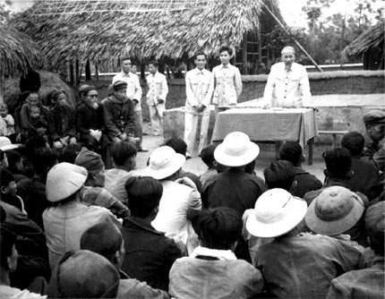
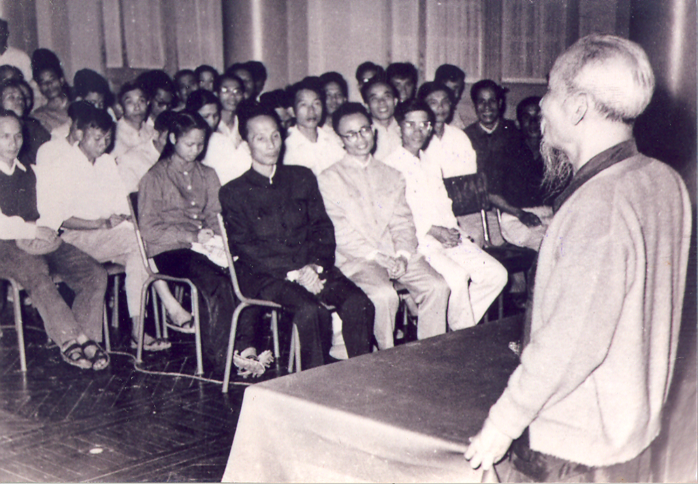

Tính chất của thời kỳ quá độ:
- Đây là thời kỳ cải biến sâu sắc nhất nhưng phức tạp, lâu dài, khó khăn, gian khổ.
- Tiến lên CNXH không thể một sớm một chiều, không thể làm mau được mà phải dần dần.
Đặc điểm của thời kỳ quá độ:

- Đặc điểm lớn nhất của thời kỳ quá độ ở VN là từ một nước nông nghiệp lạc hậu tiến thẳng lên CNXH, không trải qua giai đoạn phát triển tư bản chủ nghĩa.
- Cùng với những đặc điểm khác và mục tiêu của CNXH, đặc điểm này quy định nhiệm vụ của dân tộc ta trong thời kỳ quá độ.

Nhiệm vụ của thời kỳ quá độ:
- Đấu tranh cải tạo, xóa bỏ tàn tích của chế độ XH cũ, xây dựng các yếu tố mới phù hợp với quy luật tiến lên CNXH trên tất cả các lĩnh vực của đời sống.
- Về chính trị:
- Phải xây dựng được chế độ dân chủ
- Muốn xây dựng được chế độ này thì phải chống lại tất cả các biểu hiện của chủ nghĩa cá nhân, trước hết trong Đảng, trong bộ máy chính quyền từ cấp cơ sở đến Trung Ương
- Đồng thời, phải bồi dưỡng, giáo dục nhân dân có tri thức, có năng lực làm chủ chế độ xã hội.
- Về kinh tế:
- Nhiệm vụ cao nhất của thời kỳ quá độ là phải cải tạo nền kinh tế cũ, xây dựng nền kinh tế mới có nông nghiệp và công nghiệp hiện đại.
- Về văn hóa:
- Phải triệt để tẩy trừ mọi di tích thuộc đại và ảnh hưởng nô dịch của văn hóa đế quốc.
- Phát triển những truyền thống tốt đẹp của văn hóa dân tộc và hấp thụ những cái mới của văn hóa tiến bộ trên thế giới.
- Về các quan hệ xã hội:
- Phải thay đổi triệt để những quan hệ cũ, đã trở thành thói quen trong lối sống, nếp sống của con người.